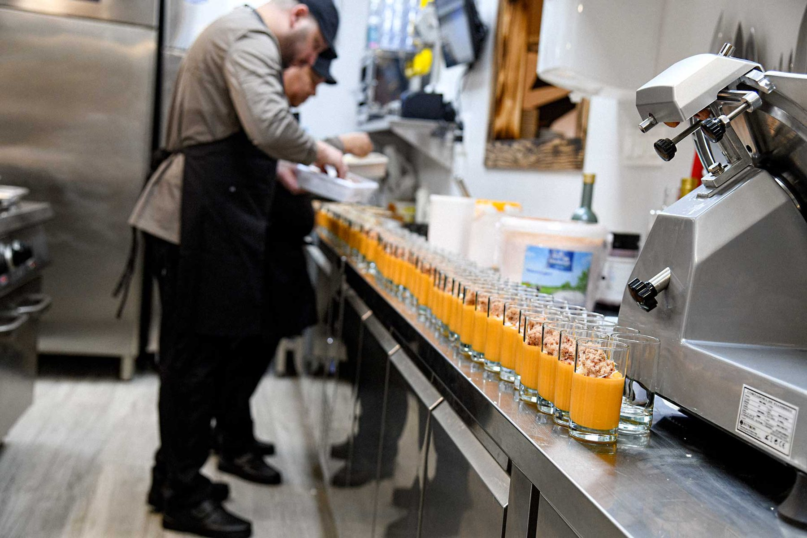
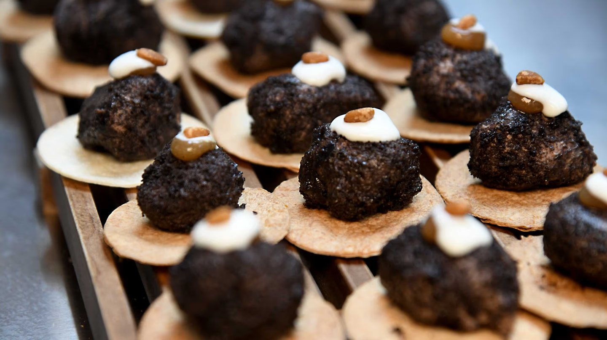

La cocina
José Ignacio
López Gómez
De Torreperogil, en la campiña de Jaén, a los fogones de un restaurante andaluz en Oviedo. Con carta blanca.
Quién es
Un cocinero
de Torreperogil
José Ignacio López Gómez es jienense, de Torreperogil, un pueblo de la comarca de Úbeda rodeado de olivar. Se formó en la provincia y tiene amplia experiencia en los mejores restaurantes de Andalucía, entre ellos el Casablanca de su pueblo.
Se trasladó a Asturias con su familia para dirigir esta cocina con libertad total. Eso se nota al leer la carta: recetario andaluz reconocible, producto de origen y técnica de hoy sin estridencias. Nada de fusión por fusionar.
Información recogida de la prensa de la apertura y de la web del restaurante. Pendiente de ampliar con el propio chef.
Retrato del chef en la cocina.
Pendiente de que lo facilite el restaurante.
Hueco reservado para el retrato de José Ignacio.
La trayectoria
Lo que trae en la maleta
Reconocimientos recogidos de la información pública. Pendientes de confirmar año y categoría exacta con el restaurante.

Su plato
El noveno pase
es para su abuela
El menú degustación recorre las ocho provincias andaluzas y termina en un plato que no pertenece a ninguna: Homenaje a la abuela Micaela. Helado de aceite de oliva virgen extra, pestiños y espuma de leche merengada.
Es la abuela del chef. Un cocinero con dos Soles Repsol cierra su menú con el dulce de una cocina de casa, y eso dice más de cómo entiende el oficio que cualquier declaración.
Ver el menú degustaciónReservar
Siéntese a su mesa
La carta, el menú degustación de nueve pases y, los días que hay, el tablao.